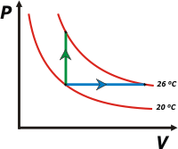

NO ME SALEN
(APUNTES TEÓRICOS Y EJERCICIOS DE BIOFÍSICA DEL CBC)
CALOR Y TERMODINÁMICA
|
|

|
| |
 |
11) Un cilindro como el indicado en la figura, contiene
3 moles de O2, a presión 1 atmósfera y
temperatura 20 ºC. La presión exterior es la
atmosférica.
Calcular el calor requerido para elevar la
temperatura del O2 hasta 26 ºC:
a) si la tapa está trabada,
b) si la tapa puede desplazarse sin rozamiento y
la expansión es suficientemente lenta como
para que el gas se mantenga a presión
constante. |
 |
|
| |
Se trata de un sencillo problema de calorimetría pero, esta vez, aplicado a un gas ideal. En general, para los gases se utiliza una constante de calor específico que expresa las calorías necesarias para elevar la temperatura en función de moles en vez de gramos. Se llaman calores específicos molares.
Una particularidad aplicable a los gases es que pueden cambiar de temperatura siguiendo procesos diferentes, para los cuales sus calores específicos adquieren diferentes valores. Sin embargo, para dos evoluciones típicas (las presentadas en este problema) los calores específicos son universales, en el sentido de que no dependen de qué gas se trate, y sólo depende de si el gas es monoatómico, diatómico (como el de este ejercicio), etc.
Para los gases diatómicos el calor específico a volumen constante, cv, vale
cv = 2,5 R, donde R es la constante universal de los gases ideales; de modo que:
Qv = cv . n . ΔT = 2,5 R . n . (TF – T0)
Qv = 2,5 . 0,08207 (l.atm/K.mol) . 3 mol . 6 K
|
|
|
| Qv = 3,69 l.atm = 373,8 J = 89,3 cal |
|
|
|
y el calor específico para una evolución a presión constante, cp, vale cp = 3,5 R. Entonces:
Qp = cp . n . ΔT = 3,5 R . n . (TF – T0)
Qp = 3,5 . 0,08207 (l.atm/K.mol) . 3 mol . 6 K
|
|
|
| Qp = 5,17 l.atm = 523,7 J = 125,1 cal |
|
|
|
| Dependiendo de los datos de que dispongas y de las unidades en que quieras expresar los resultados, usarás el valor de la constante R que mejor venga. En cuanto a las unidades en que tengas que expresar las temperaturas, en este caso da lo mismo usar kelvin o Celsius; pero si llegás a tener alguna mínima duda, inclinate por la escala absoluta que tiene garantía internacional. |
|
|
|  |
Acá te hice un gráfico presión-volumen mostrando las dos evoluciones de este ejercicio:
la evolución a) a volumen constante, en verde, llamada isocórica o isométrica;
y la evolución b) a presión constante, en celeste, que recibe el nombre de isobárica.
En rojo te dibujé las isotermas (las gráficas que representan todos los estados de una misma temperatura) de 20 y 26 grados. |
|
|
|
Desafío:
¿Cuánto vale la diferencia de presión en la evolución isocórica? ¿Cuánto vale la diferencia de volumen en la evolución isobárica? |
|
 |
| |
|
| Algunos derechos reservados.
Se permite su reproducción citando la fuente. Pregunta: ¿Qué cuentan las ovejas para poder dormir? Última actualización nov-07. Buenos Aires, Argentina. |
|
|
| | |
|
|